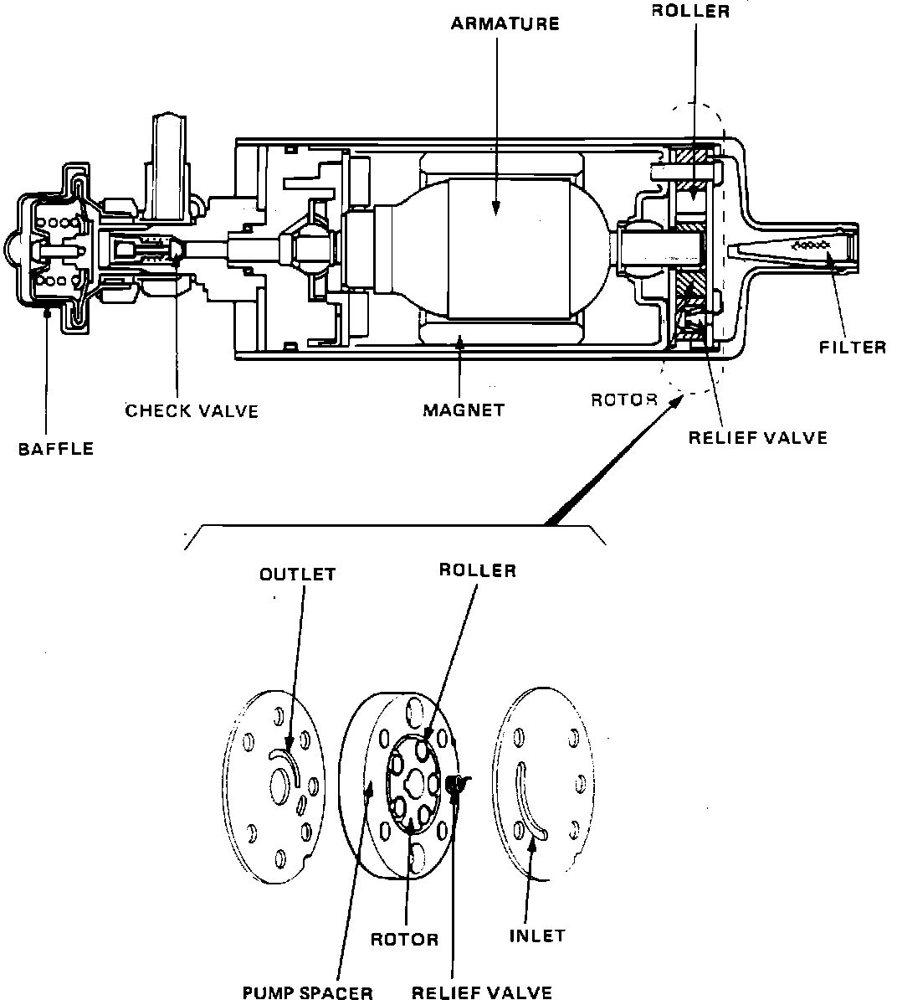

Fuel Pump: Description and Operation
Exploded View:

The Fuel Pump, located under the vehicle ahead of the left rear wheel, is an in-line direct drive type. Fuel flows from the fuel tank supply line, through a small filter located inside the pump inlet, and around the pump armature. Fuel then flows through the one-way check valve located at the outlet side of the Fuel Pump, and on to the engine compartment via the fuel supply line. A baffle is provided on the outlet side of the fuel pump to prevent fuel pressure pulsation. The Fuel Pump has an internal relief valve to prevent excessive pressure. It will open if there is a blockage in the discharge of the pump and will return the high pressure fuel back to the low pressure side of the pump. A check valve is also provided to maintain fuel pressure in the supply line after the pump has stopped. This is to ease in restarting after sitting, and to prevent any possibility of vapor lock. The pump section is composed of, a rotor, the rollers, and a pump spacer. When the rotor turns, the rollers turn and travel along the inner surface of the pump spacer by centrifugal force. The volume of the cavity enclosed by these parts changes, drawing and pressurizing the fuel.